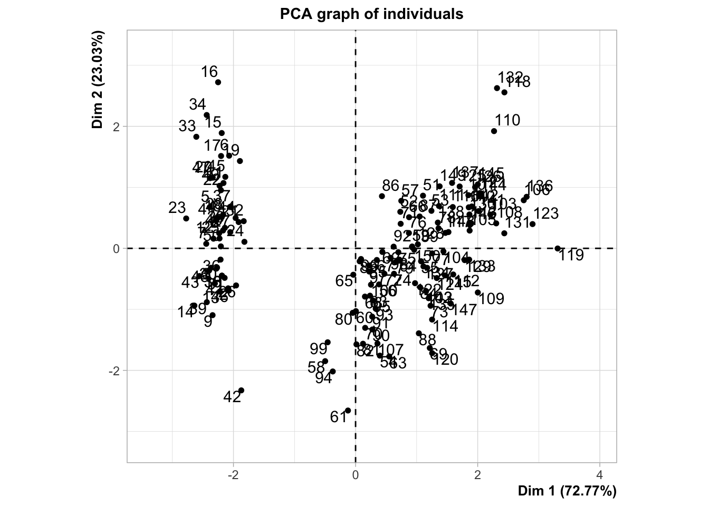
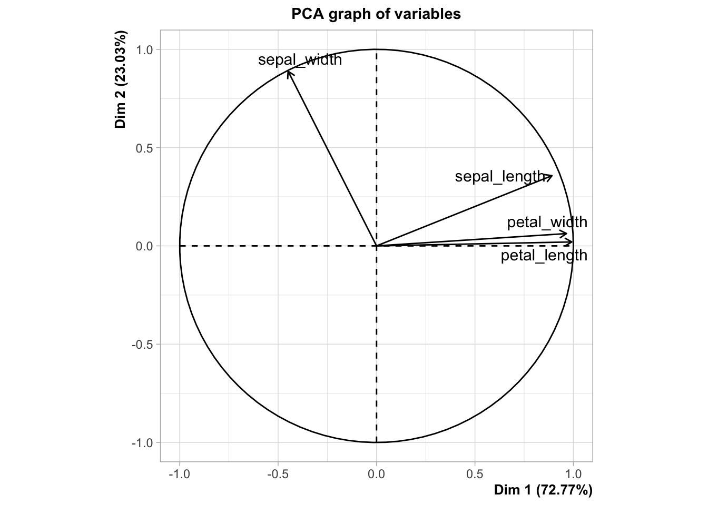

Code
library(tidymodels)
library(tidyverse)with Mall Customers Datase
Principal component analysis (PCA) is a method of reducing the dimensionality of data and is used to improve data visualization and speed up machine learning model training.
https://www.kaggle.com/datasets/shwetabh123/mall-customer
# A tibble: 6 × 5
sepal_length sepal_width petal_length petal_width target
<dbl> <dbl> <dbl> <dbl> <chr>
1 5.1 3.5 1.4 0.2 Iris-setosa
2 4.9 3 1.4 0.2 Iris-setosa
3 4.7 3.2 1.3 0.2 Iris-setosa
4 4.6 3.1 1.5 0.2 Iris-setosa
5 5 3.6 1.4 0.2 Iris-setosa
6 5.4 3.9 1.7 0.4 Iris-setosaPCA is affected by scale, so you need to scale the features in your data before applying PCA. Use StandardScaler to help you standardize the data set’s features onto unit scale (mean = 0 and variance = 1), which is a requirement for the optimal performance of many machine learning algorithms. If you don’t scale your data, it can have a negative effect on your algorithm.
sepal_length sepal_width petal_length petal_width
[1,] -0.8976739 1.0286113 -1.336794 -1.308593
[2,] -1.1392005 -0.1245404 -1.336794 -1.308593
[3,] -1.3807271 0.3367203 -1.393470 -1.308593
[4,] -1.5014904 0.1060900 -1.280118 -1.308593
[5,] -1.0184372 1.2592416 -1.336794 -1.308593
[6,] -0.5353840 1.9511326 -1.166767 -1.046525for testing purpose only.


**Results for the Principal Component Analysis (PCA)**
The analysis was performed on 150 individuals, described by 4 variables
*The results are available in the following objects:
name description
1 "$eig" "eigenvalues"
2 "$var" "results for the variables"
3 "$var$coord" "coord. for the variables"
4 "$var$cor" "correlations variables - dimensions"
5 "$var$cos2" "cos2 for the variables"
6 "$var$contrib" "contributions of the variables"
7 "$ind" "results for the individuals"
8 "$ind$coord" "coord. for the individuals"
9 "$ind$cos2" "cos2 for the individuals"
10 "$ind$contrib" "contributions of the individuals"
11 "$call" "summary statistics"
12 "$call$centre" "mean of the variables"
13 "$call$ecart.type" "standard error of the variables"
14 "$call$row.w" "weights for the individuals"
15 "$call$col.w" "weights for the variables" eigenvalue variance.percent cumulative.variance.percent
Dim.1 2.91081808 72.7704521 72.77045
Dim.2 0.92122093 23.0305233 95.80098
Dim.3 0.14735328 3.6838320 99.48481
Dim.4 0.02060771 0.5151927 100.00000Principal Component Analysis Results for variables
===================================================
Name Description
1 "$coord" "Coordinates for the variables"
2 "$cor" "Correlations between variables and dimensions"
3 "$cos2" "Cos2 for the variables"
4 "$contrib" "contributions of the variables" https://www.datacamp.com/tutorial/pca-analysis-r
---
title: "Principal component analysis "
subtitle: "with Mall Customers Datase"
execute:
warning: false
error: false
format:
html:
toc: true
toc-location: right
code-fold: show
code-tools: true
number-sections: true
code-block-bg: true
code-block-border-left: "#31BAE9"
---
Principal component analysis (PCA) is a method of reducing the dimensionality of data and is used to improve data visualization and speed up machine learning model training.
# load package
```{r}
library(tidymodels)
library(tidyverse)
```
# data
## download data
https://www.kaggle.com/datasets/shwetabh123/mall-customer
## input data
```{r}
url = "https://archive.ics.uci.edu/ml/machine-learning-databases/iris/iris.data"
# load dataset into Pandas DataFrame
df = read_csv(url,col_names = c('sepal_length','sepal_width','petal_length','petal_width','target'))
# Showing overview of the train dataset
head(df)
```
## STANDARDIZE THE DATA
PCA is affected by scale, so you need to scale the features in your data before applying PCA. Use StandardScaler to help you standardize the data set’s features onto unit scale (mean = 0 and variance = 1), which is a requirement for the optimal performance of many machine learning algorithms. If you don’t scale your data, it can have a negative effect on your algorithm.
```{r}
numerical_data=data.matrix(df[c('sepal_length','sepal_width','petal_length','petal_width')])
```
```{r}
data_normalized <- scale(numerical_data)
head(data_normalized)
```
## Before STANDARDIZE
## After STANDARDIZE
## inverse STANDARDIZE.for testing purpose only, have no impact on PCA.
for testing purpose only.
# PCA PROJECTION TO 2D
```{r}
library("FactoMineR")
res.pca <- PCA(data_normalized,scale.unit = TRUE, ncp = 2, graph = TRUE)
```
```{r}
res.pca
```
```{r}
result=res.pca$ind$coord
```
```{r}
dim(result)
```
```{r}
dim(df)
```
```{r}
library("factoextra")
eig.val <- get_eigenvalue(res.pca)
eig.val
```
```{r}
fviz_eig(res.pca, addlabels = TRUE, ylim = c(0, 50))
```
```{r}
var <- get_pca_var(res.pca)
var
```
# reference:
https://www.datacamp.com/tutorial/pca-analysis-r